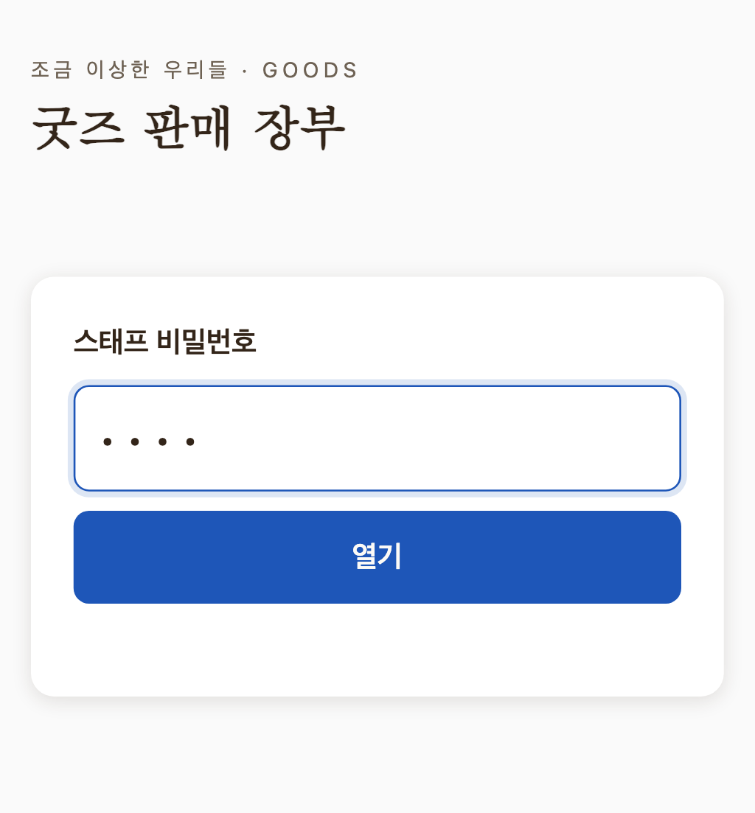
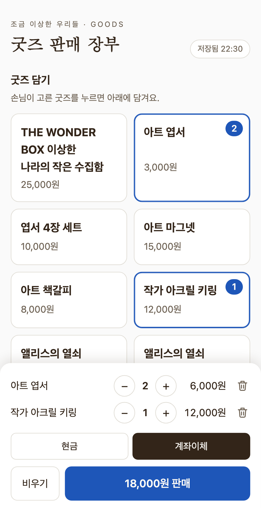
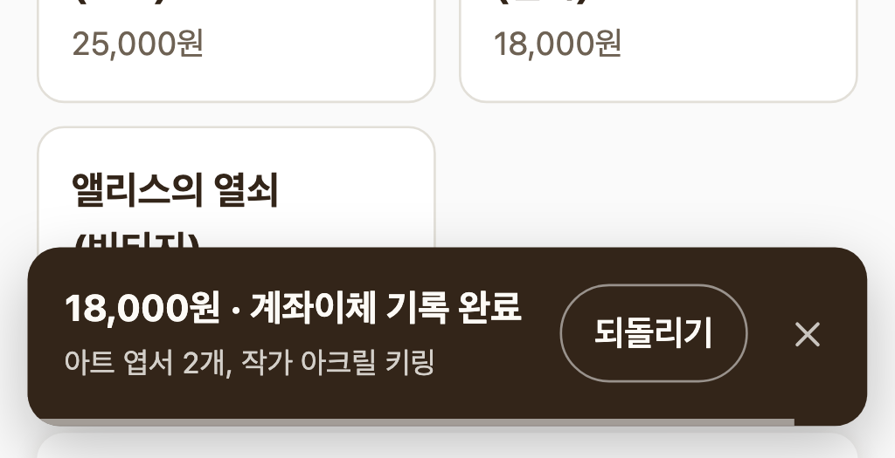
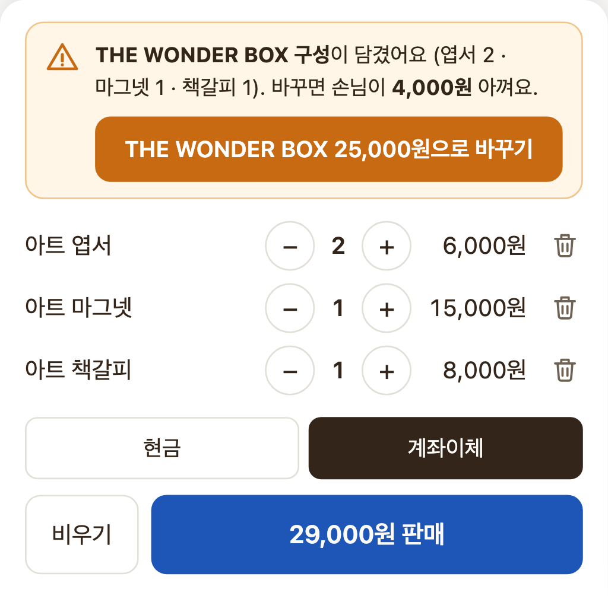
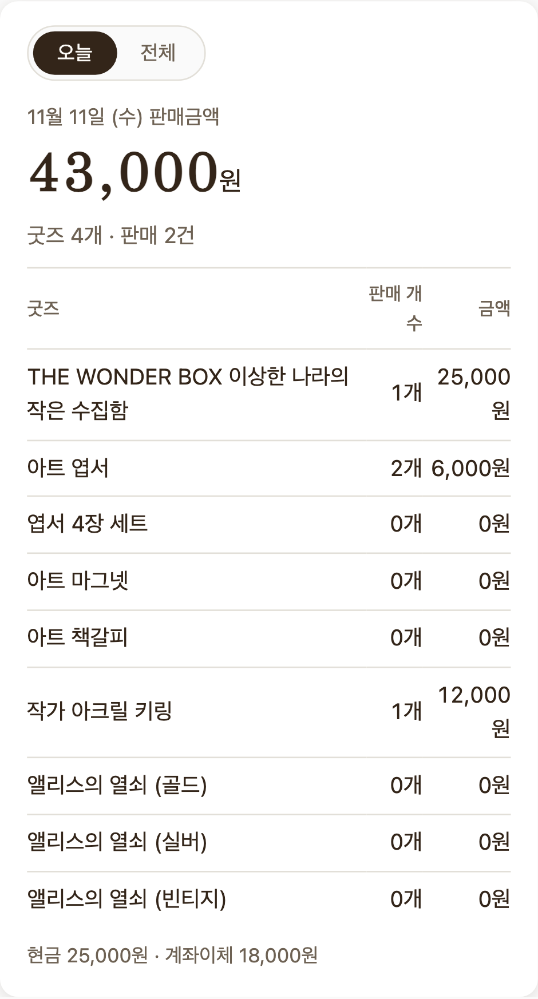
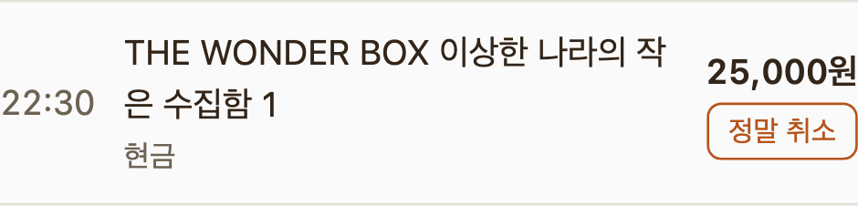
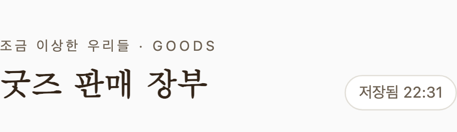

조금 이상한 우리들 · GOODS
2층 굿즈 판매를 맡은 분들을 위한 안내예요. 휴대폰으로 장부를 열어 손님이 산 굿즈를 누르기만 하면, 판매 내역이 방명록 구글 시트에 자동으로 쌓여요.
굿즈 장부 열기🔑 비밀번호는 굿즈 담당 단톡방 안내를 확인해 주세요. 한 번 열면 그 휴대폰에서는 48시간 동안 다시 묻지 않아요.
장부 주소로 들어가 비밀번호를 넣고 열기를 눌러요.
처음 연 휴대폰에서는 사용법 따라하기가 한 번 떠요. 따라 하는 동안 누른 판매는 장부에 남지 않으니 편하게 눌러 보세요.


금액을 확인하고 파란 N원 판매 버튼을 누르면 끝이에요.
5초 동안 알림이 떠요. 잘못 눌렀으면 되돌리기(담았던 굿즈가 다시 담겨요), 바로 다음 손님을 받아야 하면 ✕로 닫아요.

아트 엽서 2 + 아트 마그넷 1 + 아트 책갈피 1을 담으면 THE WONDER BOX와 구성이 같아서, 위에 주황색 안내가 떠요. 버튼을 누르면 세 굿즈가 THE WONDER BOX 하나로 바뀌어 손님이 4,000원 아껴요.

화면 가운데에서 오늘 / 전체 판매금액과 굿즈별 판매 개수를 볼 수 있어요. 여러 휴대폰에서 판 것도 모두 모여요. 재고를 적어 둔 굿즈는 남은 개수도 보여요.

5초가 지난 뒤에 잘못을 알았다면, 아래 판매 기록에서 그 줄의 취소를 눌러요. 실수로 지우지 않게 정말 취소를 한 번 더 눌러야 취소돼요.

저장됨이면 시트에 잘 올라간 거예요. 지하라 신호가 약해 전송 대기나 연결 끊김이 떠도 괜찮아요. 판매는 휴대폰에 먼저 저장했다가, 인터넷이 다시 연결되면 알아서 올라가요. 장부 화면만 닫지 말아 주세요.
